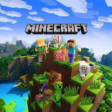
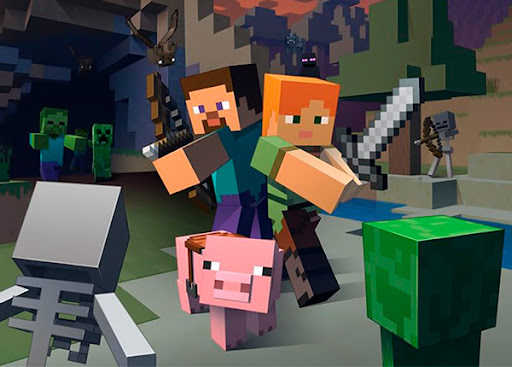

Потом вы сделаете себе домик, окружите его факелами, чтобы зомби боялись вас и обходили ваше жилище стороной. Чтобы сделать железный меч, придется прокопать тоннели вглубь земли в поисках железной руды. Но будьте осторожны во время поиска: под землей спрятаны пещеры с мощными монстрами, лучниками-скелетами и даже черными высокими худыми эндерами. Теперь вы понимаете, что такое «Майнкрафт»? Это игра, где можно делать абсолютно все и чувствовать настоящую свободу! Не могу даже помыслить, что сей текст мог хотя бы в малой мере ответить на ваш вопрос! Но я в силу своих скромных знаний хотел вам помочь. Так или иначе, желаю вам только добра!MINECRAFT TOOP!!!
спасибо за внимание
MINECRAFT TOOP!!!
YOU TOP!